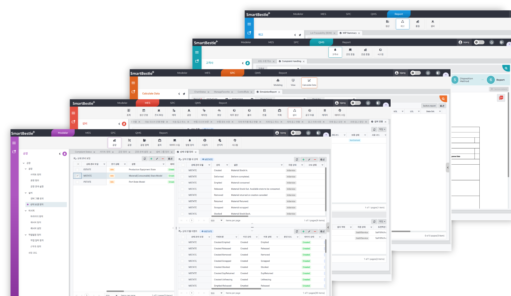
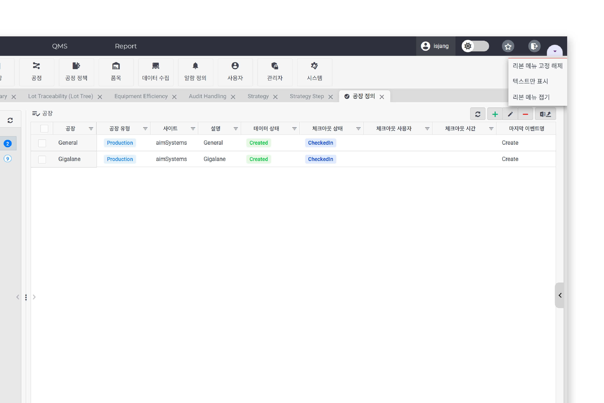
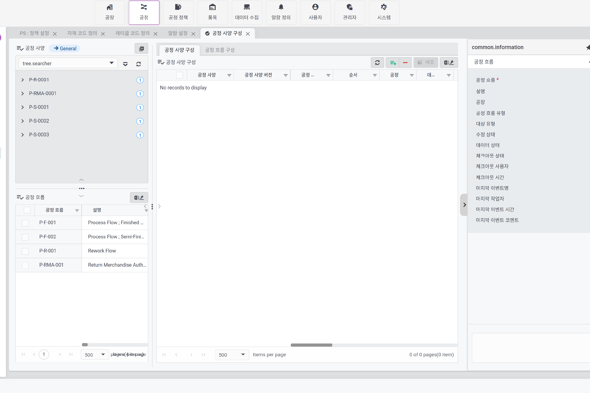
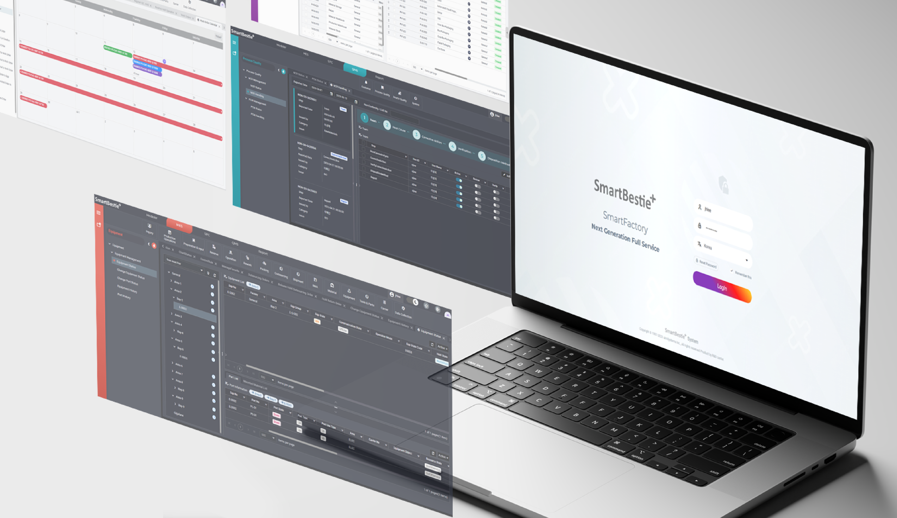
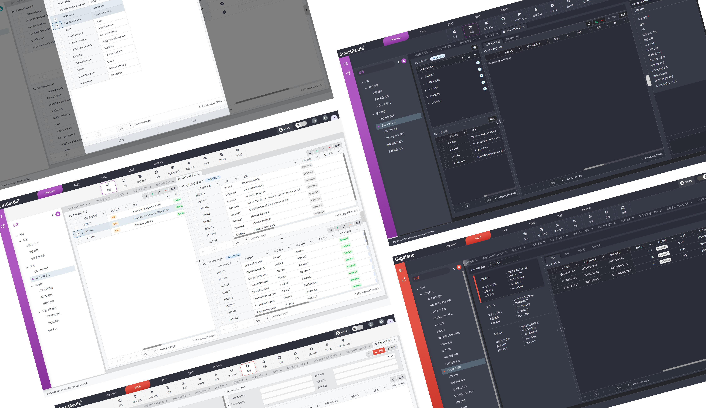

SmartBestie
Modeler, MES, SPC, QMS, PMS, Report 솔루션들을 하나의 제품으로 만든 통합제조시스템

Project Overview
여러 제조 솔루션을 하나의 제품 경험으로 묶기 위해, 공통 UI 체계를 설계하고 퍼블리싱 구조를 정비했습니다. Figma 시안 → SCSS 아키텍처 → 테마/다크모드 분리 → Vue·Syncfusion 기반 적용까지 디자인–퍼블리싱 전 과정을 일관되게 진행했습니다.
Role & Scope
- 제품 전반 IA/레이아웃 구조 설계 및 시안 제작(Figma)
- SCSS 구조/토큰화(색상·타이포·간격) 및 공통 컴포넌트 가이드
- 테마 시스템(제품별 컬러)과 다크모드 설계/적용
- Vue·Syncfusion 컴포넌트 스타일 커스터마이징 및 퍼블리싱 적용
- 문서화/핸드오프 및 유지보수 가이드 정리


Approach — UI Standardization & Theming
- 제품별 테마 컬러 정의 → 헤더/포커스/액션 요소에 일관 적용, 전환 시 즉시 반영
- 디자인 토큰(color/typography/spacing/z-index) 도입 → SCSS 변수·맵으로 관리
- 다크모드: 대비/가독성 기준 수립, 배경·텍스트·상태 색상 세트 분리
- 네비게이션/밀도 옵션: 리본형(아이콘 큼)·아이콘+텍스트·텍스트형 등 가시성/공간 요구에 맞춘 모드 제공
- 레이아웃 가변성: Splitter로 화면 분할/확장, 데이터 가시성 강화
- Syncfusion 커스터마이징: Grid/Chart 등 기본 스타일 오버라이드로 제품 룩앤필 통일

Deliverables
- 통합 UI 키트 & 컴포넌트 가이드(버튼/폼/테이블/네비게이션)
- SCSS 토큰/테마 파일(라이트/다크, 제품별 포인트 컬러)
- 레이아웃 템플릿(대시보드/상세/설정) 및 반응형 규칙
- Syncfusion 스타일 오버라이드와 적용 가이드
- 핸드오프 문서(코드 구조, 클래스 네이밍, 변경 절차)
- Syncfusion 커스터마이징: Grid/Chart 등 기본 스타일 오버라이드로 제품 룩앤필 통일

Outcome / Impact
- 제품군 간 시각 일관성 확보, 화면 전환 시 혼란 감소
- 테마/다크모드 분리로 변경 반영 속도 및 유지보수성 향상
- 공통 컴포넌트/토큰화로 중복 스타일 감소 및 개발 협업 효율 증대비
- 네비게이션/레이아웃 옵션으로 업무 시나리오별 가시성 개선